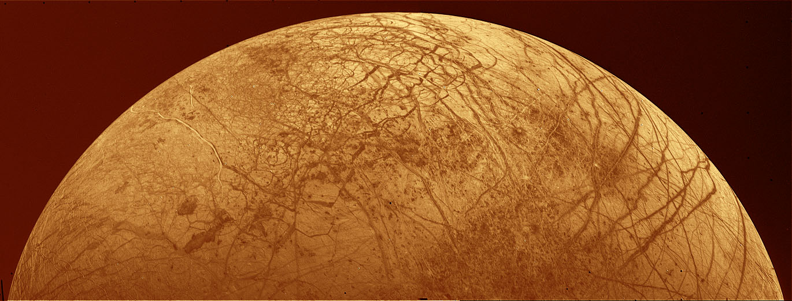
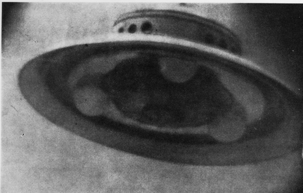
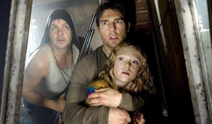

First, there's some kind of freakish UFO hovering over the planet. Then it's pow, blast, boom. And then? Then we're all dead.
Yeah, right, dead. What happened? A little while ago, some alien civilization decided Earthlings are a major pain in the ass. And now, they shot the Earth to bits with some kind of doomsday weapon out of hell. The planet incinerated, or evaporated, or was turned into a self-annihilating chunk of anti-matter -- whatever you think of. One little push on a button by a green hand, and gone we were.
But wait. First, you'll need alien life smart enough to go out in a space-ship and gun our planet to custard powder. And of course, some kind of motive would be nice. A disagreement over something, to say the very least.
First, the Universe of course is, to put it mildly, rather big. And there's the cosmological principle: no matter what chunk of universe you take, it will always be roughly the same stuff, with galaxies and stars and planets around those stars. There's plenty of evidence for this. Astronomers have spotted quite a lot of exoplanets: planets around distant stars. And if there's planets everywhere, surely planets that are inhabited can't be so unique, you may argue.
And then there's this. Life on our planet suggests that the existence of life is no big deal. Life is way older than we always thought: some 4 billion years. This means that life popped into existence almost immediately after the Earth stopped being plowed over by comets, volcanic eruptions and cosmic radiation. So life is something that very easily emerges.
|
|
But. Yes, there's a `but'.
When scientists say `life', they usually mean: unicellular life, bacteria. A wide-spread misconception about nature is that evolution is about going from single-celled bacteria to more complex beings. It is not!
The sole thing that makes evolution tick is diversity. More evolution means more diversity among those invisible, tiny bacteria that make up more than ninety percent of all life forms on Earth. In the first place, evolution means more species of bacteria. Ducks, bumblebees, fig trees and humans are more likely a side-effect, an odd waste product of natural selection.
Even more humbling, intelligence is a very rare phenomenon among animals. Out of fifty million species on Earth, only one knows what the Internet is. And to be sure, if that big comet didn't wipe out the dinosaurs 65 million years ago, thinking apes calling themselves men wouldn't even have existed! In nature, intelligence is so fucking rare.
You're not amused? Well, here's some more. Intelligence isn't even really a good tool for playing Darwin's `survival of the fittest'. In fact, the human race almost got extinct right after learning how to walk on two legs, when our species was diminished by hunger and drought to a slim total of some ten thousands!
It's very obvious intelligence has a lot of evolutionary downsides. Because of our ridiculous large brains, we are super-vulnerable to cold, heat or wounding. Because of our huge heads, we are the species that has most trouble with being born.
And there's more. Try wrestling with a lion. Try catching a rabbit, using only your bare hands. Try surviving in a forest. Just peel away all `culture', and you'll see what humanity really is: a rather clumsy, weak and ill-equipped species with a ridiculously big head.
|  |
So, to wrap things up: ET is very likely out there. But it's very unlikely ET has a light sword, a space ship or an index finger that lights up in the dark. ET is more likely a bacteria -- or at its best, a multicellular organism with no particular intelligence at all.
Hey, and besides. Just suppose there is, in spite of all the problems, intelligent life out there somewhere? Would we be at risk of being killed by them?
Surely, they'd have to be able to travel around. That's not an easy one, although science-fiction freaks carelessly say that such a civilization undoubtedly will use `worm-holes' for inter-dimensional travels. Or warp-drive, or teleportation. The cold fact, however, is that such things may well appear to be just impossible by physical law. It is so very easy to say: `Well, they're ahead of us, so they must have come up with something.'
|  | Oh boy, UFO's. Millions actually believe in them. Exit Mundi doesn't. At least not until one of those little gray characters actually shows up on The Late Show. For one thing, please take a good look at the picture on the left. The picture, taken in the sixties, is one of the most `convincing' UFO photo's ever, UFO-freaks claim. Well, if so, why then does this particular UFO look so hopelessly outdated? It reminds of sixties cars and sixties sci-fi movies with its round windows and its totally un-aerodynamic, uncool shape -- not of some highly advanced civilization. |
Even then, the aliens have to find us. That too is a tough one. The Universe is so big. And our planet is only a tiny speck of dust in the endless nothingness. Okay, we send out signals into space, from our satellites, radio's and TV-sets. But our transmissions have a tiny reach in the vastness of the cosmos.
And even within reach of Earth transmissions, an alien would have to listen extremely closely to pick up our faded-away signal. Let alone the problem of which frequency to choose. Or the problem that an alien might prefer a very different technique than `radio signals'.
Okay, okay. Against all odds, our hypothetical alien has overcome all these difficulties, and has finally found us. What's up next?
Nothing much, probably. The aliens may want to study us -- a civilization that builds spaceships and has found out how worm holes work definitely is in it for science. They would study us in much the same way we study the microbes we'll undoubtedly find on Mars or Europa.
Yeah, some Independence Day-fans might grumble. But they might also be here to colonize our planet, to steal our mineral goodies!
O yeah, sure. What nonsense. Do you really think a civilization that builds intergalactic spaceships and opens worm holes doesn't know how to solve problems like shortage of minerals in some technical way? They'd have to be a race of real dumb-ass aliens, if you ask me.
|
Beware of the Tripods!  |
 |
 |